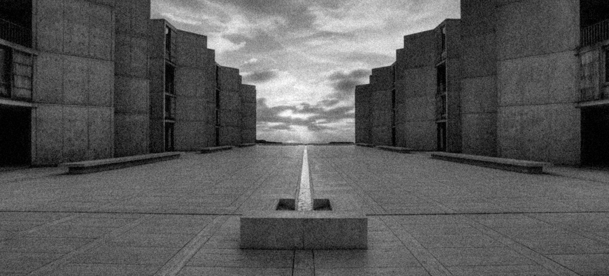
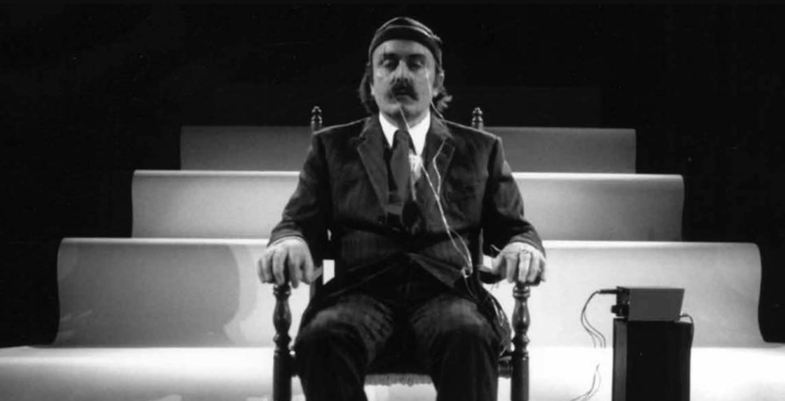
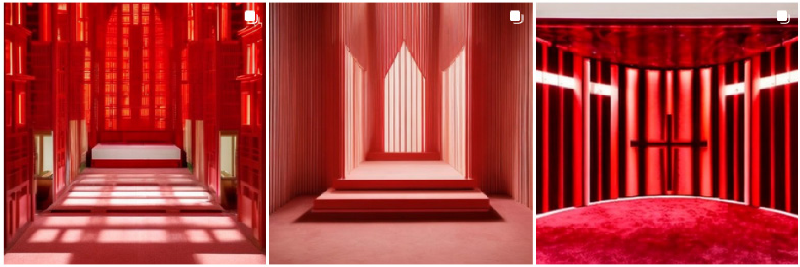

Neurarchi
Marie Frediani
Club ASAP 05
janvier 2025
Temps de lecture : 5 min
Notre perception du monde est indissociable de nos systèmes moteurs et sensoriels. Chaque interaction avec notre environnement est une expérience multisensorielle où la vue, l’ouïe, le toucher, l’odorat et même la proprioception collaborent pour créer une image mentale complexe de ce qui nous entoure. Comme l’explique le neuroscientifique Antonio Damasio dans L’Erreur de Descartes (1999), cette perception n’est pas un acte neutre. Les signaux sensoriels s’entrelacent avec des ajustements corporels, engendrant des réactions physiologiques, des émotions. Ces émotions influencent profondément notre mémoire et nos comportements. Le lien intime entre perception et émotion s’enrichit d’une dimension culturelle et individuelle. Il semble à la fois basé sur une mémoire collective et une mémoire personnelle.
L’émotion architecturale, qui s'inscrit d’une part dans des traditions et des imaginaires collectifs, est ainsi soumise au poids de la symbolique. Certaines formes font presque consensus , comme la sphère, omniprésente dans l’histoire de l’architecture mondiale. Elle incarne l’universalité, la perfection et le divin dans des civilisations aussi variées que les sociétés islamiques, où le dôme des mosquées symbolise la voûte céleste, ou les cultures bouddhistes, où le stūpa évoque l’éveil spirituel. A l’inverse, la croix, fondamentalement liée au christianisme en Europe, est simplement synonyme de convergence et de dualité dans d’autres traditions.
D’autre part, la complexité des affects est telle, que même au sein d’un même groupe social et/ou culturel, tout le monde ne perçoit pas la même réalité dans un espace donné. Contrairement à Iannis Xenakis, nous ne sommes pas tous capables d'entendre la musique produite par la trame de poteaux en façade du couvent de La Tourette. De la même manière, Oscar Niemeyer est peut-être bien le seul à se sentir émoustillé face aux courbes de ses bâtiments, inspirées par celles des femmes qui ont marqué sa vie.
L’architecture, en ce sens, agit comme une mémoire incarnée, un miroir de notre sensibilité et de notre condition humaine. Aujourd’hui, il pourrait être possible d’affiner notre compréhension des émotions qu’elle provoque, notamment par ses formes, grâce à des disciplines comme la “neuro-architecture”, qui explore l’impact des environnements bâtis sur notre cerveau. Mais comment mesurer ces effets ? Quels outils, conceptuels ou technologiques, permettent de qualifier et de quantifier les émotions suscitées par l’architecture ? Inversement, pourrait-on imaginer une architecture instruite par nos émotions ?
Vers une neuro-architecture ?
Évaluer l’impact de certains stimuli qui caractérisent les espaces architecturaux, comme la température ou la lumière, semblent plus intuitifs. Philippe Rahm, par exemple, explore dans ses travaux comment les climats produits par l’architecture influencent notre confort. Il est facile d’imaginer qu’une architecture permettant un apport contrôlé de lumière naturelle ou une gestion thermique intelligente favorise la positivité des émotions de ses usagers.
Cependant, la question des formes elles-mêmes reste plus énigmatique. La neuro-architecture tente de décrypter ces interactions complexes. L’histoire de cette discipline trouve ses racines dans les travaux du biologiste Jonas Salk. Lorsqu’il se rendit à Assise pour surmonter un blocage créatif, il attribua sa percée à l’atmosphère architecturale de la ville italienne. Ce constat le poussa à collaborer avec Louis Kahn pour concevoir le Salk Institute en 1965, lieu destiné à favoriser la créativité scientifique. En 1998, Fred Gage découvrit que le cerveau humain produisait encore des neurones à l’âge adulte, établissant un lien direct entre environnement et plasticité cérébrale. Avec l’architecte John Eberhard, ils fondent l’Académie des Neurosciences de l’Architecture pour intégrer ces découvertes à la conception urbaine.

La neuro-architecture utilise des outils scientifiques comme les électroencéphalogrammes ou les capteurs de stress pour mesurer les réponses corporelles à des stimuli architecturaux. Le groupe de recherches LENI de l’Université Polytechnique de Valence a par exemple conçu des salles d’attente pédiatriques optimisées pour générer relaxation et confort grâce à des simulateurs virtuels permettant d’expérimenter les espaces avant leur construction.
Cependant, les recherches existantes, bien qu’informatives, présentent des limitations méthodologiques importantes. La majorité des études se concentrent sur l’esthétique architecturale, négligeant des dimensions cruciales comme l’ergonomie et la fonctionnalité. En outre, l’utilisation de protocoles stationnaires, où les participants sont immobiles et exposés à des images 2D d’environnements architecturaux, limite la validité des résultats. Ces méthodes ne permettent pas de saisir pleinement l’expérience humaine des espaces construits, qui implique un engagement corporel et interactif.
Quels outils pour qualifier les émotions face aux formes architecturales... Et inversement ?
Plusieurs méthodes et outils, conceptuels comme techniques, ont déjà été, ou mériteraient d’être mis en place par les architectes et artistes qui se sont intéressés à la psyché. Ces stratégies vont du protocole expérientiel subjectif à l’expérimentation scientifique.
En 1955, Guy Debord définit pour la première fois la psychogéographie comme "l'étude des lois exactes, et des effets précis du milieu géographique, consciemment aménagé ou non, agissant directement sur les émotions et le comportement des individus".* Cette discipline s'intéresse à la perception de l’espace urbain et, plus spécifiquement, à l’expérience émotionnelle vécue par les individus au cœur de celui-ci. Elle repose en partie sur "dérive urbaine",* où les participants, marcheurs-flâneurs, identifient et évaluent les variations d'ambiances dans la ville.
* Guy Debord, "Introduction à une critique de la géographie urbaine", Les lèvres nues, n°6, 1955
Les observations recueillies sont traduites en cartes psychogéographiques, qui représentent graphiquement les émotions suscitées par l'environnement urbain. Cependant, elles soulèvent une tension : bien qu'elles cherchent à objectiver les émotions urbaines, elles reposent sur l'idée que ces ressentis sont universels, ce qui est contestable. La psychogéographie est critiquée pour son incapacité à analyser en profondeur les mécanismes complexes (sociaux, culturels, architecturaux) qui influencent l'impact des espaces sur les émotions, limitant ainsi son utilité pour comprendre et transformer les villes. Malgré tout, elle reste à l'avant-garde d’un questionnement sur les émotions produites par l’espace bâti.
En 1965, dix ans plus tard, le compositeur Alvin Lucier collabore avec le scientifique Edmond Dewan, spécialisé dans l’étude des ondes alpha, ondes cérébrales associées à un état de relaxation profonde. Dewan lui propose de participer à une expérience visant à composer une œuvre musicale à partir de ses ondes cérébrales. À l’aide de capteurs et d’amplificateurs, Lucier crée Music for Solo Performer, une pièce novatrice dans le domaine de la psychoacoustique. Cette œuvre repose sur les concepts de non-activité et de non-intentionnalité, des principes très prisés dans les milieux artistiques des années 1960.
Réalisée en temps réel, l’œuvre s’appuie sur l’activation de modules électromécaniques et un système de feedback relié aux variations des activités cérébrales de l’interprète. Pour simplifier, Lucier est assis sur une chaise, les yeux fermés, tandis que ses ondes cérébrales sont enregistrées. Ces ondes sont ensuite amplifiées et reliées à divers haut-parleurs placés contre divers instruments de percussion, qui étaient alors activés par vibration. Ce projet s’inscrit dans les réflexions sur les interactions homme-machine développées par la cybernétique.

Pourrions-nous imaginer un tel protocole s’appliquer à la génération de formes architecturales ? C’est en tout cas ce à quoi s’est essayée l'agence R & Sie(n) en 2010 avec son projet Une architecture des humeurs. Ses architectes collaborent avec un collectif interdisciplinaire composé de mathématiciens, programmeurs, architectes et spécialistes en robotique pour repenser l’architecture à travers les prismes de la neurobiologie et des mathématiques. Leur approche repose sur une modélisation computationnelle utilisant des données biologiques et physiologiques collectées auprès des visiteurs, permettant ainsi de concevoir des espaces habités et des fragments urbains selon un protocole relationnel. En effet, dans le cadre de cette exploration, une installation expérimentale capte les états émotionnels des visiteurs pour alimenter une machine constructive.
François Roche qualifie cette approche d’architecture "neuropsychologique".* Traditionnellement, ses projets s'inscrivent dans une interaction topographique étroite, adaptant la construction aux caractéristiques du lieu. Avec cette nouvelle démarche, il élargit les paramètres architecturaux pour inclure les dimensions organiques et psychiques des individus. En intégrant les émotions et les désirs des utilisateurs, il ambitionne de transformer la "chimie des humeurs"* en moteur de diversité architecturale, générant des "morphologies habitables"* uniques.
* François Roche, “Une architecture des humeurs”, new-territories, 2008-2011
De mon côté, et à partir de mon bagage expérientiel et expérimental, j’ai essayé de déterminer quels outils actuels pourraient être mobilisés en faveur d’une meilleure compréhension de l’émotion produite par les formes architecturales. Dans le cadre de notre projet de fin d’études, ma binôme et moi avons exploré des modèles de réseaux de neurones capables de générer de nouvelles images à partir d’images existantes, auxquelles sont associées des mots (pourquoi pas des émotions) qui les décrivent. Les productions de ces algorithmes semblent être "hantées"* par les propriétés des images d’origine, notamment leurs caractéristiques formelles et géométriques. Ces réseaux de neurones reposent sur une forme d’intelligence collective parfois très vaste. Ils sont très souvent alimentés par des images issues de sources multiples, étiquetées par un grand nombre de personnes, et entraînées grâce à des contributions collaboratives.
Nous pourrions ainsi envisager une expérience consistant à demander à un large échantillon de participants de sélectionner des images de formes architecturales qu’ils associent à certaines émotions. Ces données pourraient ensuite être utilisées pour entraîner ce type de modèles algorithmiques. L’objectif serait d’explorer ce que ces réseaux de neurones, basés sur des méthodes statistiques avancées, pourraient produire lorsqu’on leur demande, par exemple, de générer une architecture évoquant la tristesse ou la joie.
* Benjamin Tainturier, “Grégory Chatonsky : « IA : comprenons ce qui nous arrive plutôt que de le juger d’avance»”, AOC, 6 mai 2023

L'ensemble des articles issus du club asap 05 sont disponibles ci-dessous:
| # | Titre | Auteur | |
|---|---|---|---|
| 500 | Quatres problématiques et une intuition | Hugo Forté | Club #05 |
| 501 | Mary la super-architecte | Theodora Barna | Club #05 |
| 502 | Attentes et résolutions | Sirine Ammour | Club #05 |
| 503 | Neurarchi | Marie Frediani | Club #05 |
| 504 | Le perturbant dans l'architecture | Cristiano Gerardi | Club #05 |
| 505 | Habiter l'espace | Lucrezia Guadagno | Club #05 |
| 506 | Icone et mémoire collective | Sacha Nicolas | Club #05 |
| 507 | Perspectives don't care about your feelings ? | Basile Sordet | Club #05 |
| 508 | Pour une phénoménologie mobilisatrice | Louis Fiolleau | Club #05 |